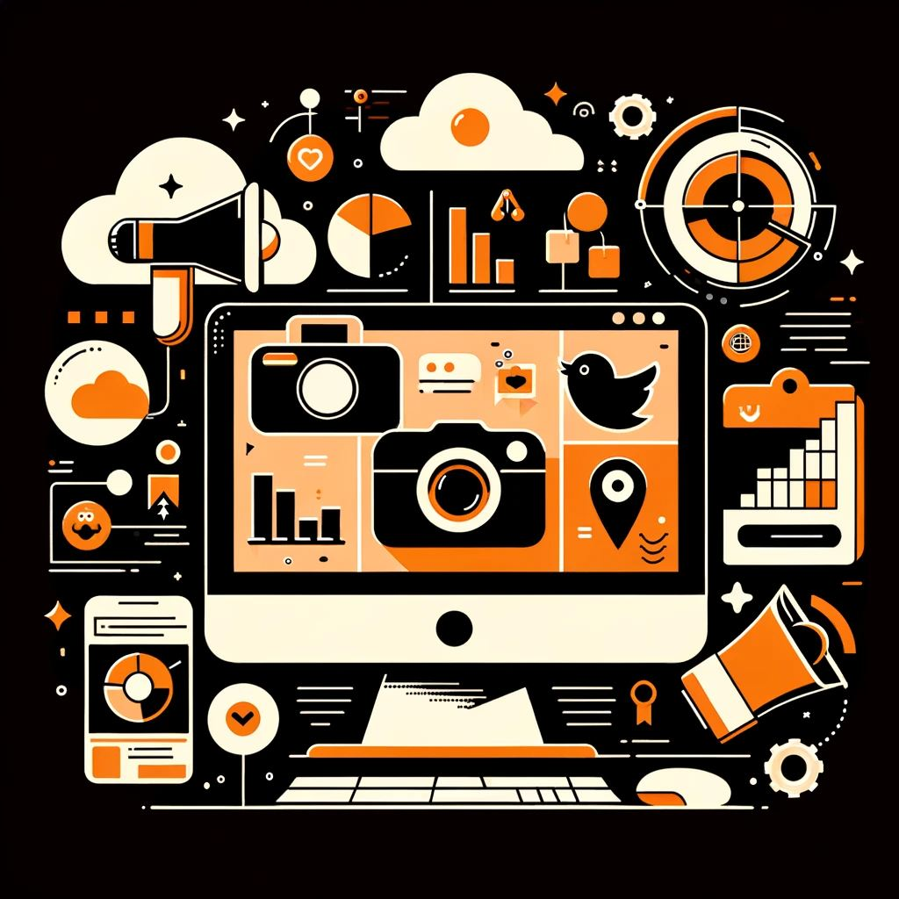
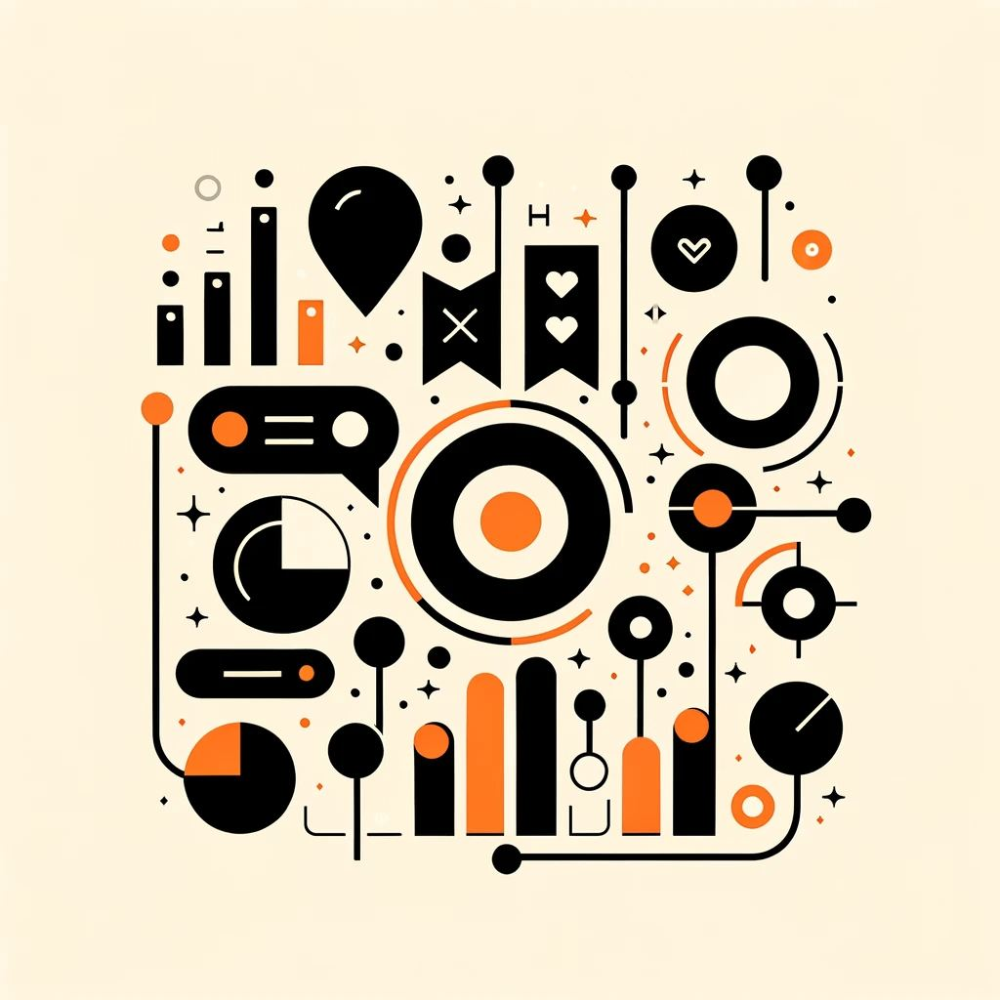

Цифровая эра принесла с собой волну информации, которую мы создаем, публикуем и потребляем ежедневно. В связи с этим для эффективной работы с контентом появились разнообразные сервисы и инструменты, которые помогают нам управлять информацией и творческими процессами. Меньше рутины, большей идей для контента.
Программы для работы с видеоконтентом
ВидеоМОНТАЖ
Программа ВидеоМОНТАЖ предоставляет простой и интуитивно понятный интерфейс на русском языке, что делает ее отличным выбором для новичков в мире видеомонтажа. С ее помощью вы можете выполнять разнообразные операции с видеофайлами, такие как обрезка, ускорение и объединение клипов, запись озвучки, добавление текста, графических элементов и переходов, а также коррекцию цветовой палитры. В результате вы можете легко экспортировать готовые видеоролики под конкретные интернет-платформы или выбрать из более чем 30 различных форматов, что позволяет вам создавать видеоматериалы, даже если вы только начинаете свой путь в мире видеомонтажа.
Достоинства
Большая база 3D переходов
Многослойный нелинейный монтаж
Конвертация видео
Регулярный выход обновлений
Быстрая запись на диск или выгрузка в интернет готового ролика
Недостатки
Ограниченное время использования приложения ( всего 5 дней бесплатно) далее пакет стандарт от 690 рублей в течение неограниченного количества времени.
Качество итогового видео немного хуже исходного

SUPA
Этот веб-сервис предоставляет обширные возможности для создания видеопостов. В его функционале есть готовые шаблоны, заставки, возможность добавления записей, графики и создания анимации. Сервис также позволяет создавать видеоконтент в вертикальном формате, что удобно для публикации на платформах, таких как ВК Клипы, YouTube Shorts и другие.
Преимущества
Простой в использовании и подойдет для тех, у кого нет навыков монтажа
Наличие службы технической поддержки, своевременно решающей проблемы пользователя, которые связаны с работой сервиса
Осуществление работы через веб-браузер — онлайн-редактор позволяет работать с проектом без установки на персональный компьютер.
Неограниченное количество создаваемых видео
Недостатки
Очень частое предложение подписки ( премиум 419 р в месяц)
Мало обновлений
Сложно работать в мобильной версии
Сервисы для работы с визуалом
Canva
Canva - это веб-платформа для создания графического контента и дизайна. Она предоставляет широкий выбор инструментов и шаблонов для разработки визуальных материалов, таких как посты в социальных сетях, логотипы, презентации, обложки для книг и многое другое. Canva позволяет пользователям легко создавать профессионально выглядящий дизайн, даже если у них нет опыта в графическом дизайне, предоставляя бесплатные и платные функции.
Преимущества
Простой интерфейс
Есть функция командного доступа.
Обширный функционал: достаточно широкий выбор шаблонов, шрифтов, картинок и необходимых инструментов
Недостатки
Большинство креативных эффектов и картинок только по подписке
Дорогая подписка ( 12 €)
Использование только с VPN
Picture Plus
Этот инструмент предназначен для редактирования изображений, видеороликов и текстовых материалов. Предлагает премиум два тарифных плана для расширения функционала : standart 399 р. и premium 899 р. Он сделает процесс управления социальными сетями более эффективным, начиная с планирования контента и заканчивая созданием рекламных объявлений для целевой аудитории, а также хранением хэштегов и текстовых элементов.
Преимущества
Быстрое получение результата.
Можно создать свою собственную библиотеку картинок
Есть собственная коллекция фотографий с возможностью поиска по ключевым словам, в которой более миллиона изображений. Вы можете свободно использовать эти фотографии, включая их коммерческое использование, не нарушая авторские права.
С использованием одного и того же шаблона можно легко создать разнообразные изображения, включая или выключая различные элементы, что делает их уникальными и непохожимыми друг на друга.
STOCK UP
Этот сервис объединяет несколько крупных фотостоков, что позволяет существенно ускорить процесс поиска подходящей картинки для вашего визуального контента.
Преимущества
Более 29млн изображений, которые можно использовать бесплатно и без лицензии
Частые обновления и развитие сайта
Не требует регистрации
Возможность быстро скачать ту или иную фотографию без ограничений
ФотоМАСТЕР
Эта программа предоставляет возможности для редактирования изображений. Предлагает 3 тарифных плана : стандарт - 690 р, премиум 990 р, профи - 1470 р. В главном меню вы найдете инструменты для улучшения фотографий, такие как ретуширование лица, изменение размеров, коррекция цветов, устранение шумов и фонов, добавление текста, стикеров, рамок и другие функции. Помимо этого, в программе встроен искусственный интеллект и богатая коллекция фильтров, которые позволяют значительно улучшить изображения всего несколькими кликами.
Преимущества
Автоматическое улучшение качества
Простой интерфейс
Более 100 фильтров и эффектов
Недостатки
Импортированные RAW файлы могут терять свое точность изображения
Бывают вылеты из программы
Для расширения функционала нужна платная версия
Сервисы для работы с аудиоконтентом
Существует обширный набор сервисов и программных инструментов, предназначенных для обработки аудиоконтента. Иногда для опубликованных материалов требуется добавление музыкального сопровождения, озвучивание или удаление шумов из речи, и в этом случае выбор подходящего решения зависит от ваших конкретных потребностей.
Krisp
Это нейронная сеть, которая способна в реальном времени убирать фоновые шумы из аудиозаписей. Она распознает и изолирует громкие звуки, такие как шумы транспорта, работающие бытовые устройства и голоса людей в комнате. Этот инструмент полезен в областях, где важны звонки и аудиокоммуникации, такие как онлайн-конференции, интервью, рабочие совещания и многое другое, что позволяет улучшить качество звука и значительно сократить затраты на оборудование, а также время на его настройку.
Преимущества
Легкий в использовании
Полная поддержка любой гарнитуры, микрофона и динамика
Быстрое выключение и включение
Недостатки
Расширение для браузера Chrome не совместимо с Zoom и не выполняет свои функции с этой платформой
Бесплатная пробная версия имеет ограничение

Audacity
Этот бесплатный аудиоредактор предоставляет обширный набор функций, обладает интуитивно понятным интерфейсом и предоставляет возможность выполнить разнообразные операции с аудио. Вы можете записывать звук, обрезать аудиотреки, регулировать темп и скорость воспроизведения. Кроме того, приложение способно удалять фоновый шум, повышать качество звука и объединять аудиодорожки. Этот инструмент будет полезен для создания подкастов, озвучивания бегущих строк и записи аудиообъявлений.
Преимущества
Допускает обработку одновременно множества треков
Обработка музыкальных файлов происходит с высокой скоростью, даже если это большие файлы.
Приложение доступно на всех популярных операционных системах
Недостатки
В бесплатной версии ограничение на количество дорожек
Плохая работа с VST - VSTi плагинами
Для профессиональных музыкантов возможностей программы будет мало
Beatoven
Это искусственный интеллект, который использует нейронную сеть для создания музыки. Он принимает во внимание заданные параметры, такие как темп, настроение, стиль и инструменты, и на основе них генерирует композиции, которые звучат как полноценные треки, с яркой ритмикой и мелодичностью. Эти созданные композиции могут быть использованы в качестве саундтреков для видеороликов, подкастов, рекламных материалов и в других целях.
Теперь у вас есть знание о десяти приложениях и веб-ресурсах, которые помогут вам создавать, готовить и публиковать разнообразный контент для эффективной рекламы и продвижения в интернете. Помните, что ваша аудитория разнообразна, а форматы контента - видео, фотографии, тексты и аудиозаписи - способны привлечь различные категории подписчиков. Некоторые предпочитают читать посты, в то время как другие любят смотреть видеоролики и слушать подкасты. Многообразие контента позволит вам достичь большей аудитории и усилит узнаваемость вашего бренда.
А если вы хотите заказать ведение социальных сетей, не стесняйтесь обратиться к нам в агентство Digital Nuts Agency. Мы специализируемся на разработке и продвижении современных веб-проектов, которые способствуют достижению ваших целей в интернете.
Telegram канал: https://t.me/nutsdigitalagency
Паблик в vk: https://vk.com/nutsdigital
Автор статьи: seo-специалист Наталья Михайлова